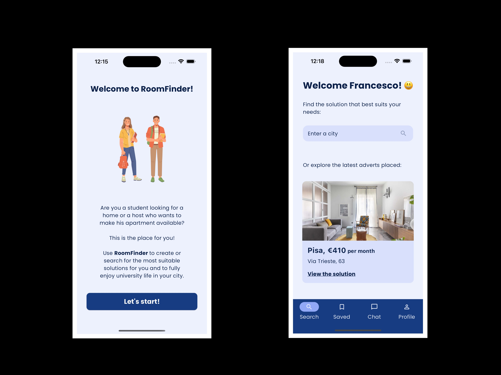
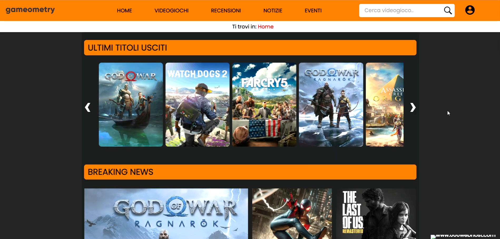
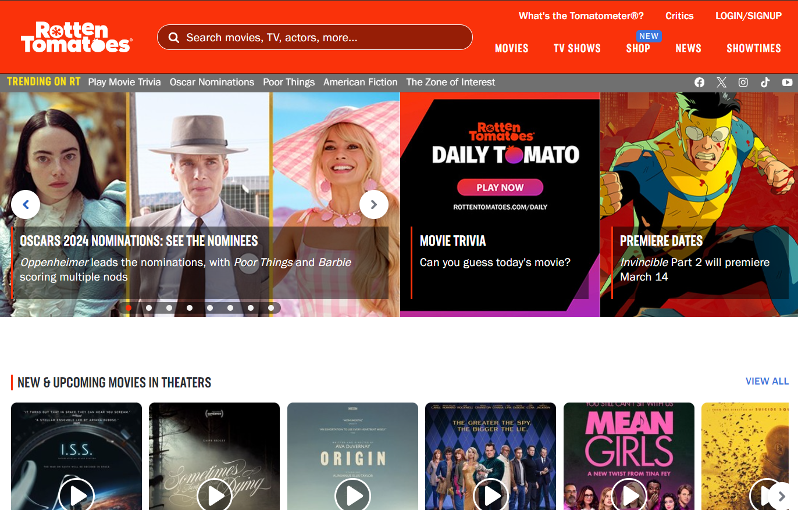
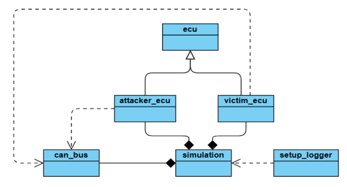
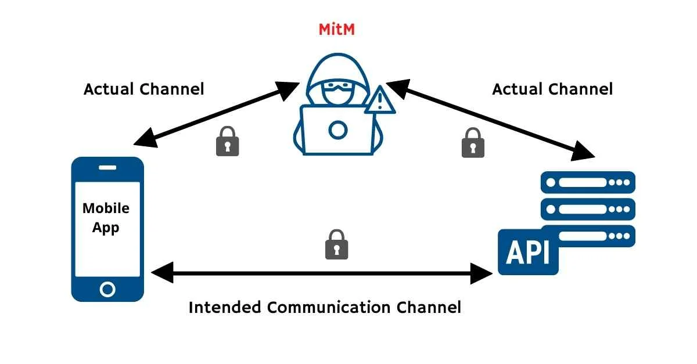
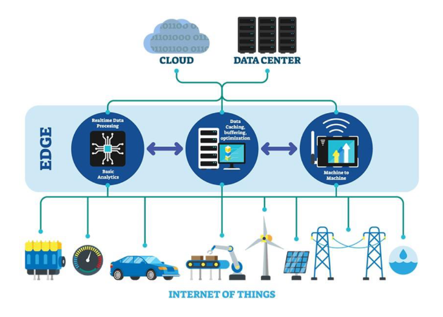
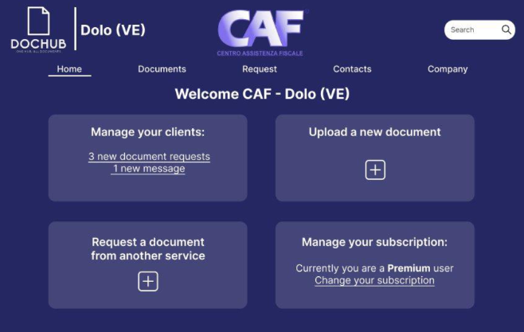

Projects
RoomFinder
The project consists of developing RoomFinder, a mobile application that respects all the common principles of mobile design and usability to ease the user experience. The app was developed using Flutter and provides a way for students to search for house rentals in Italy.


Development of a website related to the gaming world, covering the latest releases, news, reviews from critics and the public, and much more. The website was developed using key web technologies such as HTML, CSS, JavaScript, and PHP.

The aim of this project is to study the usability of a real website to understand if it respects the usability standard. The analysed website is Rotten Tomatoes.

The aim of this project is to simulate a Bus-Off attack on a simple CAN (Controller Area Network) bus, showcasing the dynamics of error handling and frame arbitration in a vehicle communication system. The attack is aimed at forcing a victim ECU (Electronic Control Unit) into a bus-off state, rendering it incapable of communication.

The project consists in studying a PLA (Physical Layer Authentication) approach effectiveness in a Bluetooth channel. This has been done by implementing an effective decoding algorithm able to classify messages as legitimate or non legitimate, authenticating so the sender.
A study on edge computing

The survey explores the role of edge computing in addressing challenges associated with traditional cloud-based IoT architectures, such as high latency, bandwidth constraints, and scalability limitations.

The project consists in launching DocHub, a startup with the aim of simplifying the retrieval of digital documents in Italy by developing a platform that collects in one place all the digital documents of a person, simplifying the daily life of people.